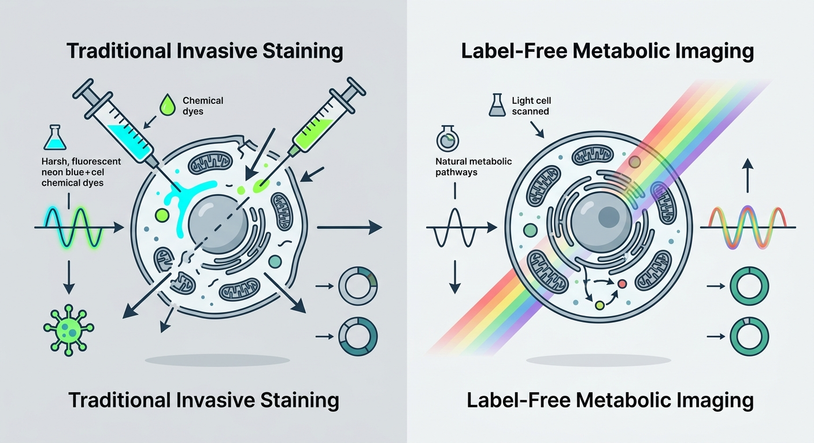

The Metabolic Camera: How a New Label-Free Imaging Platform is Unmasking the Cellular Secrets of Aging

Imagine trying to assess the economic health of a bustling metropolis, but you are only allowed to look at it through highly distorting, single-color filters. To see the banks, you must paint them bright blue; to see the power grids, you must dye them neon green. By the time you have finished staining the city, your intrusive chemical interventions have disrupted the very commerce you wanted to observe.
For decades, this has been the fundamental paradox of cell biology. To understand how cells age and fall into disease, scientists have had to use chemical dyes, fluorescent tags, or genetic modifications to light up target molecules. But these labels can be toxic, they alter natural cellular behavior, and they typically only let researchers look at one or two variables at a time. The complex, interconnected symphony of cellular metabolism—where fats, proteins, and energy-producing molecules dance in delicate harmony—remains largely obscured.
Now, a team of researchers has unveiled a breakthrough technology that promises to strip away the dyes and illuminate the cellular landscape in pristine, natural detail. Published in the preprint journal bioRxiv, the researchers introduce MANIFEST (Multimodal Analysis of Nonlinear Imaging for Functional Endogenous Spatial correlaTion). It is, in essence, a multi-spectral camera for the microscopic world, combining four distinct laser-based imaging technologies into a single, unified platform that requires absolutely no chemical labels.
By listening to the natural vibrations and light emissions of living molecules, MANIFEST allows scientists to watch, in real time and at subcellular resolution, how tissue metabolism rewires itself during aging and disease.
The Quartet of Light
At the heart of MANIFEST is the integration of four advanced, non-linear optical imaging techniques. Rather than relying on artificial dyes, these technologies exploit the intrinsic physical properties of the molecules themselves:
- Stimulated Raman Scattering (SRS): This technique maps the distribution of lipids and proteins. It works by shooting pairs of laser beams into the tissue; when the frequency difference matches the molecular bond vibrations of fats or proteins, it creates a resonance. It is the chemical equivalent of whispering to a wine glass until it sings.
- Multiphoton Fluorescence (MPF) & Fluorescence Lifetime Imaging Microscopy (FLIM): Together, these modalities capture the behavior of NADH and FAD—the critical metabolic cofactors that act as the cell’s cellular fuel gauges. Crucially, FLIM does not just measure how much of this fuel is present; it measures the exact picosecond decay of their natural glow, which reveals whether these molecules are floating free or bound to enzymes, a direct readout of how efficiently the cell is burning energy.
- Second Harmonic Generation (SHG): This technique maps structural proteins, specifically collagen. When intense laser light hits highly ordered structural proteins, the molecules scatter the light back at exactly double the frequency, providing a crisp blueprint of the tissue’s physical scaffolding without any staining.
By orchestrating these four modalities simultaneously, MANIFEST creates a unified, high-dimensional map of tissue health. It correlates structural stiffness (collagen) with energy production (NADH/FAD) and chemical storage (lipids) at a scale never before achieved.
A Journey Through Four Pathologies
To prove the power of their new platform, the research team deployed MANIFEST across four distinct biomedical frontiers, each representing a major facet of human aging and disease.
First, they looked at Alzheimer’s disease. Using brain cell co-cultures treated with amyloid-beta—the toxic protein plaques associated with the disease—MANIFEST revealed a dramatic metabolic panic. Astrocytes and microglia exposed to the plaques began accumulating dense droplets of lipids while their metabolic pathways underwent a massive shift, showing signs of severe mitochondrial distress.
Next, they examined metabolic dysfunction in the liver. Feeding mice a high-fat diet, the team used MANIFEST to track "metabolic zonation"—the highly organized spatial distribution of metabolic functions across the liver. The imaging showed that a high-fat diet completely shatters this spatial organization, causing massive lipid accumulation and a chaotic breakdown of the liver's localized energy metabolism.
Third, the researchers turned to human tissue, imaging samples of non-ischemic cardiomyopathy (heart failure). Here, MANIFEST illuminated a stark, tragic landscape: normal cardiac muscle was replaced by disorganized, dense collagen fibers (fibrosis), while the remaining heart cells showed a severe depletion of metabolic activity, effectively documenting a heart running out of structural integrity and fuel.
Finally, they mapped the aging mouse retina. The retina is one of the most metabolically demanding tissues in the body. MANIFEST was able to pinpoint layer-specific metabolic declines in the aging eye, showing precisely where the energy factories of the photoreceptors begin to sputter and fail over time.
Why the Longevity Field is Watching
For the longevity and biotechnology sectors, MANIFEST represents far more than a beautiful gallery of microscopic images. It is a potential paradigm shift in drug discovery and therapeutic screening.
Currently, evaluating whether a longevity therapeutic successfully "rejuvenates" a tissue requires destroying the tissue to run genetic sequencing or chemical assays. MANIFEST changes the game. Because it is entirely label-free and non-destructive, researchers can use it to continuously monitor living human organoids or engineered tissues over time. They can apply an anti-aging drug and observe, in real-time, whether the cells shift their lipid storage back to a youthful profile, repair their collagen scaffolding, and restore their mitochondrial energy production.
By providing a rapid, high-throughput, and deep phenotypic readout of cellular health, MANIFEST could drastically accelerate the timeline for bringing mitochondrial-targeted therapies, metabolic regulators, and senolytics from the lab bench to clinical trials.
In the quest to extend healthy human lifespan, we can only treat what we can measure. With MANIFEST, scientists finally have a master key to observe the cellular economy in its natural state—and perhaps, learn how to keep its factories running indefinitely.
Sources & Citations:
Primary Source: Label free multimodal optical imaging of metabolic heterogeneity and correlation in aging by integrating SRS, MPF, FLIM, and SHG (bioRxiv)
- "Label free multimodal optical imaging of metabolic heterogeneity and correlation in aging by integrating SRS, MPF, FLIM, and SHG." bioRxiv, 2026. DOI: 10.64898/2026.04.11.717872